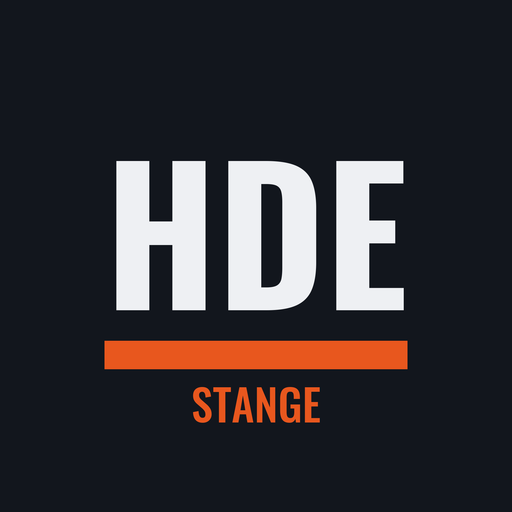

App de horas de espera
Instálala en tu teléfono. Queda como un ícono más, igual que WhatsApp.
- Toca el botón Compartir de Safari (el cuadrado con una flecha hacia arriba, abajo en la pantalla).
- Baja y toca Agregar a inicio.
- Toca Agregar. Aparece el ícono HDE Stange.
Abre este link en Safari; en otros navegadores del iPhone no se puede instalar.
- Toca el menú del navegador (los 3 puntos, arriba a la derecha).
- Toca Instalar app o Agregar a pantalla principal.
- Confirma. Aparece el ícono HDE Stange.
Listo, la app quedó instalada. Búscala en tu pantalla como HDE Stange y entra con el PIN que te dio la empresa.